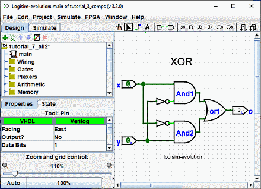
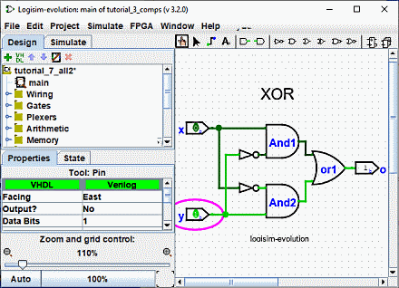

上一步: 第3步：添加文本
第4步：测试你的电路
我们的最后一步是测试我们的电路，以确保它确实达到我们的预期。 Logisim-evolution已经在模拟电路。 让我们再看看我们在哪里。

请注意，输入引脚均包含 0； 输出引脚也是如此。 这已经告诉我们，当两个输入均为 0 时，电路已经计算出 0。
现在尝试另一种输入组合。选择
"Poke"
工具 (
 )，并通过单击输入来开始戳输入。 每次您点击输入时，其值都会切换。 例如，我们可能首先点击底部输入
)，并通过单击输入来开始戳输入。 每次您点击输入时，其值都会切换。 例如，我们可能首先点击底部输入

当您更改输入值时，Logisim-evolution 将通过将它们绘制为浅绿色表示1值或深绿色（几乎黑色）表示 0 值来显示哪些值沿着导线传输。 您还可以看到输出值已更改为 1。
到目前为止，我们已经测试了真值表的前两行，并且输出（0 和 1）与所需的输出匹配。
| x | y | x XOR y |
|---|---|---|
| 0 | 0 | 0 |
| 1 | 0 | 1 |
| 0 | 1 | 1 |
| 1 | 1 | 0 |
通过拨动不同组合的开关，我们可以验证其他两行。 如果它们全部匹配，那么我们就完成了：电路工作了！
要存档已完成的工作，您可能需要保存或打印电路。 | File | 菜单允许执行此操作，当然它也允许您退出 Logisim-evolution。
下一步: 第5步：单步模式